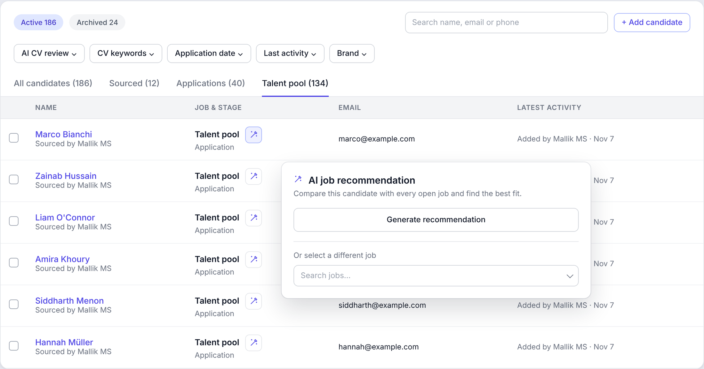

Context
The talent pool holds candidates who aren't attached to a job: past applicants, CVs sent to the company's careers inbox, referrals for later. For an active hiring team it grows into thousands of profiles, and it should be the cheapest place to hire from.
Problem
There was no practical way to use it. Keyword search existed, but it finds words, not fit. A search for "sales" could return designers whose CVs happen to mention sales, and miss strong candidates who describe the same experience differently.
So recruiters fell back to manual work: opening CVs one at a time and comparing each one against their open roles. With thousands of candidates and 10 to 20 open jobs, that doesn't scale. In practice the pool was ignored, and every new job was sourced from scratch.
"If someone is in the talent pool, show me which job they fit the most."A request from several customers
Filling the pool
Before matching could help, the pool had to fill up. Two gaps meant customers were losing candidates:
- No open job, no application. A good candidate visiting the careers page with nothing suitable open simply left.
- CVs stuck in email. CVs sent to a careers inbox had to be downloaded and added to the ATS by hand, so most never made it in.
So we added three ways in:
- Apply to the talent pool from the careers page. If no open job fits, the candidate can apply to the talent pool directly. Customers keep in touch with people they can reach out to when the right role opens.
- Forward an email, add a candidate. Forwarding a CV email to Whitecarrot reads the email, parses the CV and adds the candidate to the talent pool automatically, with no manual entry.
- Fully automatic with email rules. I wrote a help article showing customers how to set up a rule in their mailbox, so every email with a CV that reaches their careers address is forwarded on its own. The sender gets a confirmation email that the candidate was added to the talent pool.
During testing I found the candidate's source showed our internal inbox address. We changed it to show the customer's own address the CV was sent to, so recruiters can see where each candidate came from.
Use cases
- A new CV lands in the pool: which of my open jobs is this person right for?
- I'm going through my pool: which job does each person fit?
- I'm looking at a candidate: why are they a fit, and can I move them in one step?
Why AI
Matching a candidate to a job is a judgement, not a search. A recruiter reads the whole CV and weighs it against what the role needs. AI can do that same reading consistently, across every candidate and every open job, which no recruiter has time to do by hand.
We already had an AI CV review that scores applicants against a job's must-have and nice-to-have criteria, and recruiters trusted it. Matching could build on the same foundation instead of starting a new model.
How it works
- Ask from the list. Next to each talent pool candidate, the recruiter opens AI job recommendation.
- AI compares against every open job, using each job's must-have and nice-to-have criteria, and picks the best fit.
- The reason is shown: how many must-have and nice-to-have criteria the candidate meets.
- The recruiter decides. One click moves the candidate into that job, or they pick a different one. Regenerate re-runs it as jobs open and close.

Decisions and trade-offs
- Reuse the AI CV review. Consistent scoring across applicants and pool candidates, and faster to build than a separate matching model.
- Generate on request. Every candidate-to-job comparison has an AI cost. Running it when a recruiter asks keeps that cost on matches someone actually looks at.
- Always show the reason. Recruiters act on recommendations they can verify. A score without a reason gets ignored.
- No automatic moves. A wrong move damages trust far more than a missed one, so a person always makes the call.
- No new emails. Once a candidate moves into a job, that job's existing stage emails apply.
- In the list, not a new screen. The recommendation opens next to the candidate's stage, with the full job title and a "Move to" button, so recruiters can work through the pool without leaving it.
Impact
Learnings
- With AI, a wrong recommendation costs more trust than a missing one. Show the reason, and keep a person in the loop.
- Test with weak and borderline CVs, not just strong ones. That's where poor matches surface.